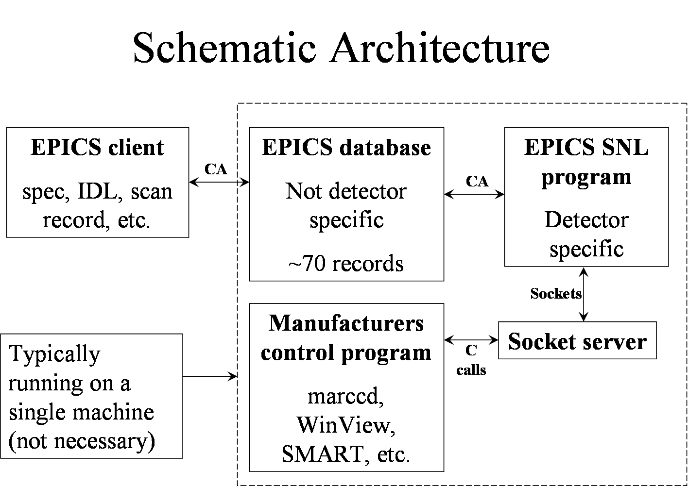
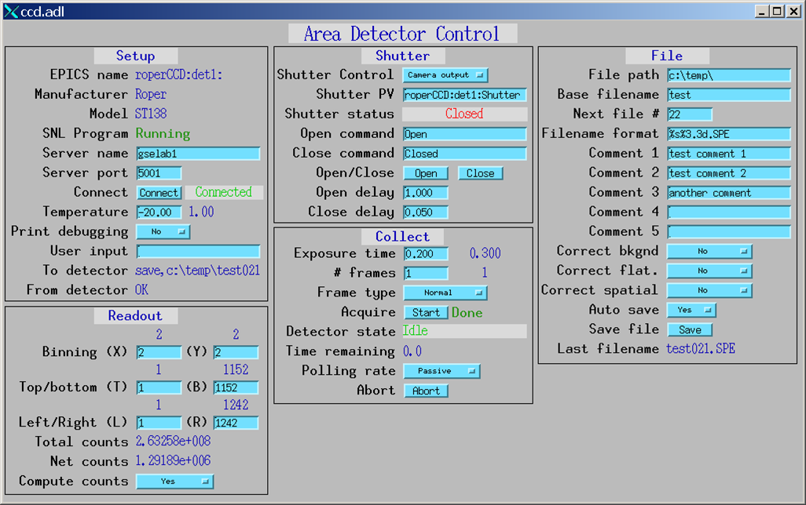
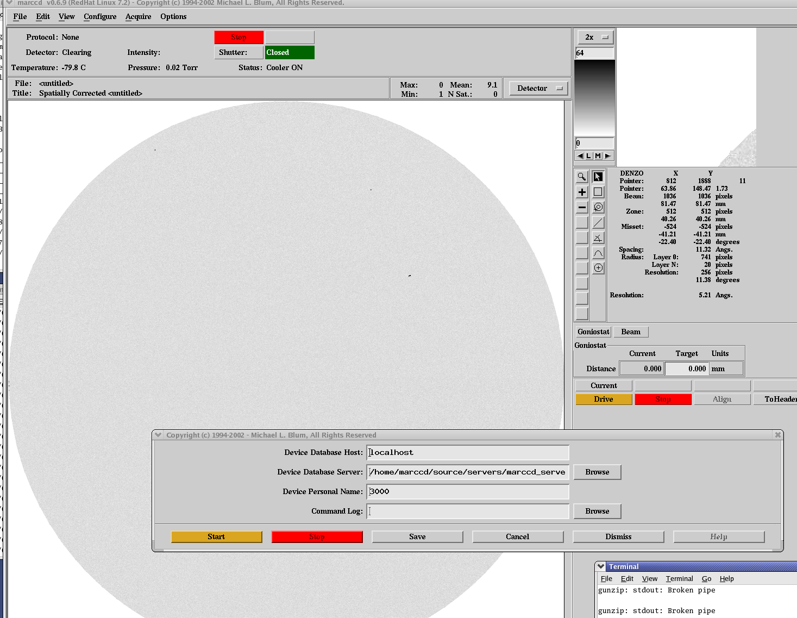
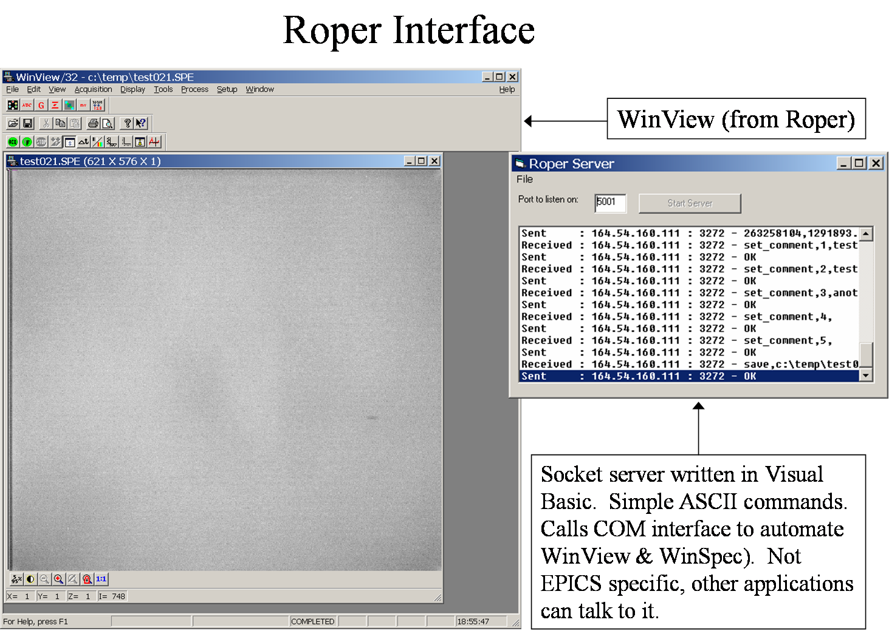

ccd: Area detector support
Mark Rivers
Goal: Uniform interface for controlling area detectors (CCD, online image plates) from EPICS
Any EPICS client (e.g. spec, IDL, scan record) can control (at a bare minimum).
- Exposure time
- File name
- Start collection, wait for completion
- Much more control for most detectors
Current status
- MAR 165 CCD (complete, in use)
- Roper CCD detectors (complete, in use)
- Bruker CCD detectors (soon)
- Will be based on Tim Graber’s work
- Will use the smartService socket interface
- There is a functioning software package that allows the Bruker SMART
software to control EPICS goniometers and shutters. It runs as a SNL
program in an EPICS IOC, and emulates the Bruker GGCS RS-232 goniometer
controller. This package is called smartControl
and is documented separately.
- MAR 345 online image plate (soon)
- Will be based on Keith Brister’s work
Implementation
Use manufacturer’s software for primary user interface.
- Minimizes amount of new code
- Uses existing file formats, unwarping algorithms, etc.
These programs include:
- marccd for MAR165
- Winview/Winspec for Roper cameras
- SMART for Bruker cameras (can also use WinView)
- scan345 for MAR 345 image plate
Control these programs from EPICS
- Each of these programs has a “remote control” interface, typically using TCP/IP
sockets
- Using EPICS means each client (e.g. spec) does not have to know how to talk to
each type of detector. Only has to know how to talk to EPICS.
- EPICS software consists of
- Database of records (PVs), identical for all detectors
- State-notation-language (SNL) programs, unique for each detector. Reads/writes
PVs and communicates with remote control interface over sockets.
- The database and SNL programs are typically run on the same machine that the
user interface software runs on (e.g. Linux box for MAR detectors, Windows for
Roper and Bruker). No VME crate required.
Schematic System Architecture

Relationship with Brian Tieman’s Package
- Complementary to, and compatible with, Brian’s package.
- My software uses the same PV names as Brian’s wherever possible, so EPICS
clients that work with his software should work with mine
- Brian’s uses the EPICS portable channel access server, rather than running a
real EPICS database and SNL program on the server machine
Only option when Brian wrote his code, before EPICS 3.14.
- Brian’s program calls library (DLL) layer directly, bypasses manufacturers user
interface program
- More flexible
- More code
- File format is HDF, not manufacturers format that many data processing
applications expect
- Unwarping is not implemented
- Brian’s program is a Windows application, and so only works on Windows detectors
(Roper, several others). Not MAR or other Unix detectors.
MEDM User Interface
This screen is the complete collection of PVs. Not all of these PVs are
implemented for any particular detector type, depending upon the limitations in
the manufacturers control software.

EPICS Process Variables (PVS)
marCCD interface

Roper Interface

Suggestions and comments to:
Mark Rivers : (rivers@cars.uchicago.edu)
Last modified: January 27, 2004
{kind=link}
{kind=link}
{kind=link}